第1课时｜45分钟
女装设计 III · 第04周
第04周｜主题板与设计任务书
主题板组织证据，设计任务书做出承诺。
把第03周的穿着者与时事证据压缩成一页可执行方向。
证据筛选 → 主题板 → 概念句 → 设计任务书 → Gate 1
第04周主题转译系列同一系列 5套造型
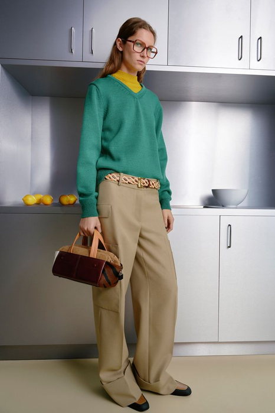
01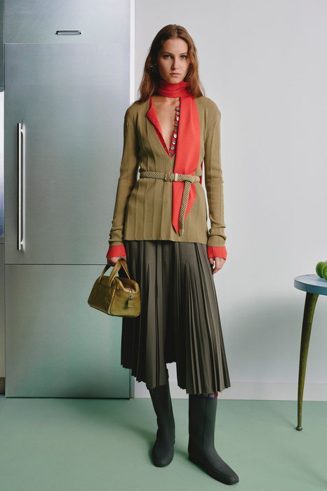
02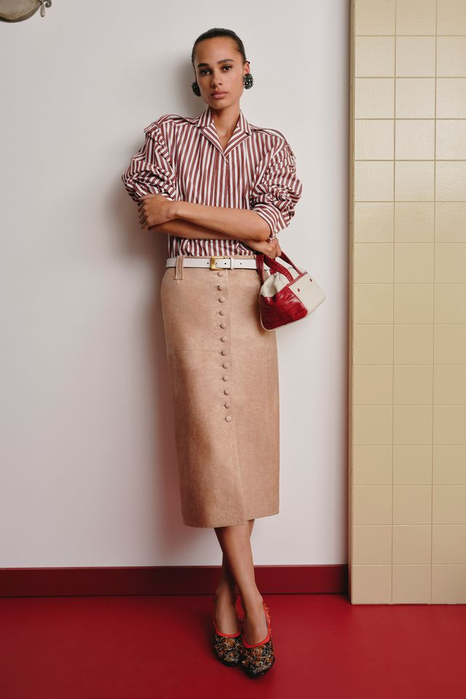
03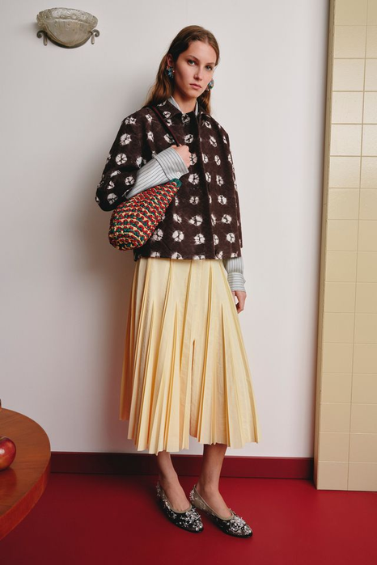
04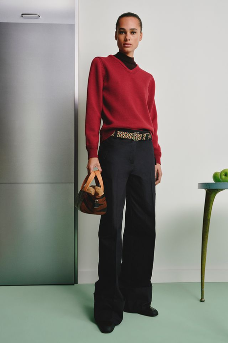
05图源：课程 2026–2027 秀场资料库｜用途：仅作本周主题转译封面，具体系列信息见各案例页
十六周课程路径女装设计 III · 第04周 · 第1课时｜45分钟
十六周不是孤立主题，而是一条连续的设计证据链
前8周建立方法并完成中期验证；后8周深化春夏与秋冬系列，最终独立完成主题系列与答辩。
01–04判断与定位
05–08提取与验证
09–12季节系列开发
13–16独立项目与考核
已完成本周后续
第1课时｜45分钟
女装设计 III · 第04周
03 学习目标
今天要完成一页主题板和一页设计任务书
目标不是“听懂”，而是交出四项能够当场检查的设计证据。
筛选
5—8 → 20 → 8—12张把第03周带来的 5—8 张已标注资料补齐到 20 张候选，再筛出会改变轮廓、材料或使用判断的 8—12 张。
达成证据：每张图都能回答“为什么保留？”
组织
建立1条因果线把人物、情境、矛盾与形式线索按逻辑连接。
达成证据：能从任一形式追溯到来源。
承诺
45字 + 8项任务书说明为谁、在何种条件下、以什么策略解决什么。
达成证据：概念句与任务书使用同一组关键词。
边界
1项不做 + 1项验证明确本阶段排除什么，以及下一步如何检查成立。
达成证据：写出样布、白坯或试穿方法。
学情大二，已完成第01—03周，能写出可验证的设计命题并交付问题板。当前三个普遍困难：资料多但说不出“为什么保留”；概念句写成形容词堆叠；边界只写“想做什么”，不写“不做什么”。 教学重点把问题板的证据压缩成 45 字概念句，并让八项任务书与证据编号一一对应。 教学难点写出“排除什么”——学生倾向于保留所有可能性，导致下一周无法开始元素提取。
第1课时｜45分钟
女装设计 III · 第04周
上周→本周
今天不从零开始——上周的问题板，就是今天主题板的骨架
第03周回答“这条线为谁存在”；本周回答“因此我承诺做什么”。
上周问题板上的
今天变成
在哪一页用
穿着者画像
主题板“人物”层
主题板结构
动作—问题证据链
主题板“场景”“问题”层
主题板结构
2条可追溯时事证据
主题板“时事”层
主题板结构
3条可验证要求
设计任务书的“题”“形”“验”
设计任务书八项
右上角写的交付方式
任务书的“品”——产品与系列范围
开发边界
立场句第四次升级第01周“我选择______的身体关系” → 第02周“我用______这条结构线实现它” → 第03周“因为______在______会______，所以这条线必须______” → 本周压成一句45字概念句：为［对象］，在［情境］中，通过［形式／材料策略］解决［核心矛盾］。
开场 3 分钟确认第03周问题板（W03_学号_姓名.pdf）已交课程群、纸质稿在桌上 → 匿名读 2 份第03周一句话小结并点评 → 摊开问题板与已标注资料，今天全程使用。未取得公开许可的访谈材料只在受控课堂查看，不进入本周提交件。
课后查阅｜教学补充
女装设计 III · 第04周
04 板的职责
主题板不是情绪板，设计任务书也不是长篇说明
一个负责建立视觉论证，一个负责锁定行动。
主题板
- 呈现人物、场景、问题与形式线索
- 图片带来源与标注
- 看得见证据之间的关系
检验：随手指板上一张图，你能说出它和旁边那张的关系吗？说不出就还是拼贴。
设计任务书
- 写出设计问题与标准
- 限定产品、材料与开发边界
- 决定下一步实验和评价方法
检验：别人拿着它，能不能判断你下一步该做什么？判断不出就还是说明文。
常见错误主题板做成好看的拼贴（图之间没有关系），设计任务书写成长篇说明（没有边界和标准）。 体量参考两者加起来不超过一张 A3 和一页文字——写不下，通常说明还没有决定。
第1课时｜45分钟
女装设计 III · 第04周
05 主题板结构
一页主题板包含五层相互指向的证据
用同一个高级女装命题贯穿示范：图片总量仍控制在8—12张，但每一张必须承担不同职责。
01 / 人物人物
谁的身体、身份与审美需要被优先处理？
本案例证据需要跨越工作与夜间社交的城市女性。
02 / 场景场景
她在何时、何地，以什么动作转换角色？
本案例证据会议、展览开幕、城市步行与晚间活动。
03 / 时机时事
什么当代变化让这个问题在今天成立？
本案例证据夜间文化活动与弹性工作的报道／数据，必须标来源。
04 / 方法形式
哪种轮廓或材料原理能够回应前述证据？
本案例证据可释放体积、半透明叠层与可调固定点。
05 / 问题问题
两种需求在哪里冲突，必须由服装验证？
本案例证据正式仪式感与抬臂、行走自由如何同时成立？
证据检验删除任何一层后，如果设计决定完全不变，该层仍只是装饰资料。
第1课时｜45分钟
女装设计 III · 第04周
06 概念句
45字以内：条件、矛盾与策略必须同时出现
继续使用上一页“主题板结构”的案例，把五层证据压缩成能够指导设计的句子。
对象跨越工作与夜间社交的城市女性
情境会议、展览开幕与城市步行之间
矛盾正式仪式感 ↔ 抬臂与行走自由
策略可释放体积 + 半透明叠层
句式为［对象］，在［情境］中，通过［形式／材料策略］解决［核心矛盾］。
空泛句｜无法执行“设计一个优雅、未来、可持续的女性系列。”
只有形容词，无法决定轮廓、材料，也无法提出下一步实验。
可执行句｜可以验证“为跨越工作与夜间社交的城市女性，以可释放体积协调仪式感与行动自由。”
对象、矛盾与形式策略均可转成图纸、样布和试穿检查。
能画可转成轮廓／结构图
能做可用样布或白坯验证
能排除知道哪些选择不属于本系列
第1课时｜45分钟
女装设计 III · 第04周
07 设计任务书
一份可执行任务书至少回答八个问题
不能回答的部分，就是下一步研究任务。
第1课时｜45分钟
女装设计 III · 第04周
08 系列预读
Caroline Hu 2026秋冬｜先看五套结果，再反推系列规则
五套不是五个独立点子：先找出保持不变的设计密码，再观察体量、材料与身体距离如何改变强度。
Caroline Hu 2026秋冬 · Vogue Runway同一季5套：结果观察 → 过程倒推
 01 基准造型
01 基准造型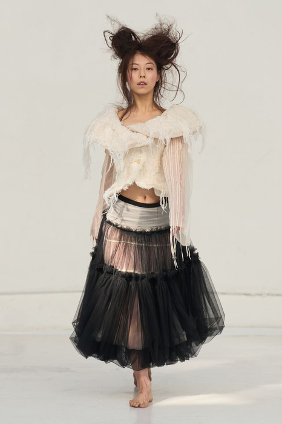
02 材料转折 03 黑白反转
03 黑白反转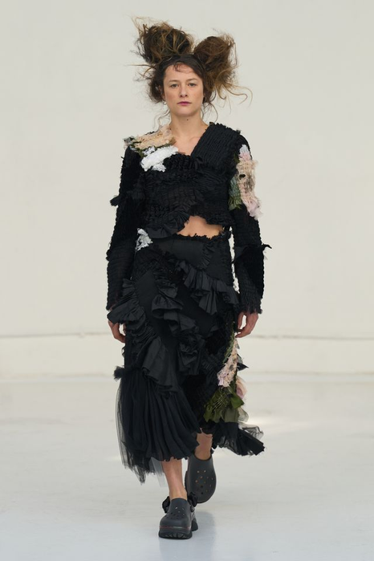
04 结构收束 05 体量峰值
05 体量峰值保持：黑／白色域、薄纱与棉／蕾丝的材料冲突、受控的身体暴露。
变化：层次密度、身体距离与体量峰值；从下一页起，用“主题板实例”倒推主题板、实验与成衣验证。
图源：Caroline Hu 2026秋冬成衣｜Vogue Runway｜用途：仅用于“先看结果、再反推系列规则”的观察
第1课时｜45分钟
女装设计 III · 第04周
09 主题板实例
院校实例｜《一隐一现》如何把“花窗—光影—时间”压缩成命题
清华大学美术学院周玉清的官方公开主题板。这里选择的不是“园林风格”，而是会随时间与视角改变的光影现象。
 周玉清《一隐一现》主题版｜清华大学美术学院，2026（点击放大）
周玉清《一隐一现》主题版｜清华大学美术学院，2026（点击放大）主证据保持同一观察对象连续记录同一花窗在不同时刻形成的影子，比较“出现—变淡—消失”的变化。
空间证据补充观看方式长廊图像说明光影不仅改变表面，也会随着人的行走与视角移动改变阅读顺序。
命题必须可以继续转译目标不是复制花窗纹样，而是用透明、孔隙、叠层与明暗密度表现“若隐若现”。
图源：周玉清《一隐一现》主题版，清华大学美术学院 2026 届公开资料｜用途：仅用于主题板结构观察
课后查阅｜教学补充
女装设计 III · 第04周
10 材料工艺
从主题板到材料工艺｜“光影”必须变成可测试的表面变化
同一命题依次经过现象提取、组织结构、表面工艺与光线验证，才有资格进入服装。
 《一隐一现》面料工艺｜孔隙、叠层、晕染与点状肌理（点击放大）
《一隐一现》面料工艺｜孔隙、叠层、晕染与点状肌理（点击放大）01 先提取“现象”保留花窗光影的斑驳、透叠与移动，不把完整窗格直接贴到衣服上。
02 再选择“组织”官方说明采用挑孔、空气层、吊目与浮线提花，使虚实关系进入织物结构。
03 设置“表面层级”泼墨晕染、喷墨、烧花与3D打印点阵分别处理流动、透明和定格的光影。
04 回到“验证问题”材料在不同光线与角度下，是否真的产生时隐时现的视觉变化？
图源：周玉清《一隐一现》面料工艺资料，清华大学美术学院官方公开页面｜用途：仅用于“现象→组织→表面→验证”的工艺链观察
第1课时｜45分钟
女装设计 III · 第04周
11 效果到成衣
从四套效果预想到代表性成衣｜公开证据能够验证到哪一步
官方页面展示四套效果图，并以三个走秀视角呈现其中一套代表性成衣；未公开的成衣不作推断。
 四套系列效果图｜修长比例、半透明叠层与非对称体积
四套系列效果图｜修长比例、半透明叠层与非对称体积 成衣视角 01（点击放大）
成衣视角 01（点击放大） 成衣视角 02（点击放大）
成衣视角 02（点击放大） 成衣视角 03（点击放大）
成衣视角 03（点击放大）系列共性灰白色域、纵向延伸、半透明叠层与局部斑驳共同维持“光影流转”。
成衣验证代表性造型保留修长轮廓，并让肩部、侧身与裙身的表面密度产生虚实差异。
证据边界效果图显示四套方向，但公开页面只足以确认这一套成衣的落地状态。
回到你自己的主题板你的公开证据能验证到哪一步？哪一步只能写“待验证”？ 密度差异要点开大图看；三张视角在缩略状态下不足以判读。
图源：周玉清《一隐一现》效果图与走秀影像，清华大学美术学院官方公开页面｜用途：仅用于公开证据可验证范围的判读；未公开部分不作推断
课后查阅｜教学补充
女装设计 III · 第04周
12 证据到规则
每条设计规则都要有来源
规则不是装饰偏好，而是重复出现的决策。
第1课时｜45分钟
女装设计 III · 第04周
13 二次案例
第二个院校案例｜《有无相生》把废旧面料变成设计规则
清华大学美术学院王云锦的硕士作品：以寄木细工为技术支点，把“无价值”的废旧面料转化为新的服装表面。
 《有无相生》灵感版｜废旧面料、切片肌理与“有／无”命题（点击放大）
《有无相生》灵感版｜废旧面料、切片肌理与“有／无”命题（点击放大） AI辅助流程与效果图｜材料实验、组合预演与系列方向
AI辅助流程与效果图｜材料实验、组合预演与系列方向01 证据记录废旧面料的层次、边缘、磨损与原有色差，而不是先画一件“环保风”服装。
02 技术支点多层复合后切削成片，再把切片重新拼合，形成类似寄木细工的条带肌理。
03 设计规则每套造型改变条带的方向、密度与覆盖面积，但保留“废料转为主表面”的原理。
04 AI边界官方板用于组合与效果预演；材料强度、厚度和缝制可行性仍必须由实体试样验证。
图源：王云锦《有无相生》灵感版与 AI 辅助流程图，清华大学美术学院硕士作品公开资料｜用途：仅用于“材料原理→设计规则”的观察
第1课时｜45分钟
女装设计 III · 第04周
14 材料到成衣
从材料规则到代表性成衣｜层叠、切片与斜向拼合如何进入轮廓
官方页面公开同一代表性造型的全身与近景。先检查材料原理是否真正控制结构，再评价视觉风格。
 代表性成衣｜全身比例
代表性成衣｜全身比例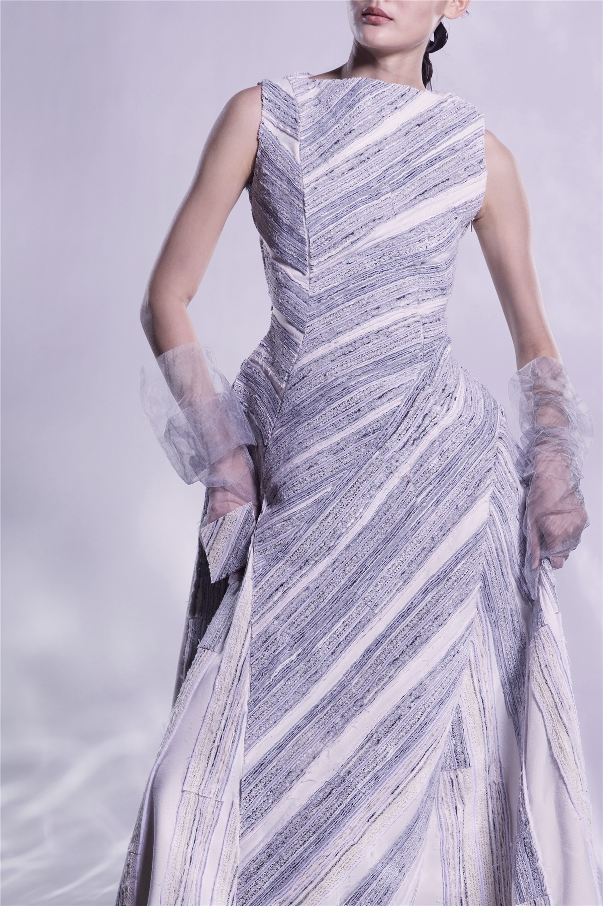
代表性成衣｜胸腰与裙身材料细节斜向拼合控制视线条带从肩胸穿过腰部并延伸到裙身，把表面实验转成连续的结构方向。
密度变化形成层级胸腰区域压缩、裙摆区域释放，使同一肌理在身体不同部位呈现不同强度。
废料成为主体材料再生表面承担轮廓、明暗与触感，不只是附加一个“可持续”装饰符号。
只陈述可验证范围公开资料展示该代表性造型的全身与近景；其余系列方向以效果图为依据。
图源：王云锦《有无相生》代表性成衣全身与近景，清华大学美术学院官方公开页面｜用途：仅用于材料原理是否控制结构的判读
第1课时｜45分钟
女装设计 III · 第04周
15 材料与责任
材料责任不是标签，而是一条可验证的决策链
继续观察《有无相生》：只有来源、物性、使用寿命与证据边界能被逐项说明，“可持续”命题才真正进入设计任务书。
 《有无相生》秀场展示｜清华大学美术学院官方资料
《有无相生》秀场展示｜清华大学美术学院官方资料01 来源与输入
记录旧料的种类、原用途、可用面积、损耗，以及必须补充的新料比例。
检查：什么被再利用？实际使用了多少？02 物性与工艺
比较复合、切片和拼合后的厚度、重量、垂坠、强度与边缘脱散。
检查：样布能否支撑预定轮廓与缝制？03 使用与寿命
通过穿脱、坐姿、抬臂、清洁和修补测试，判断成衣能否被长期重复使用。
检查：责任是否延伸到穿着与维护？04 证据与边界
只陈述来源记录、样布实验和试穿能够证明的内容；没有数据时不写“零碳”。
检查：每个主张能否找到对应证据？学生提交｜材料护照来源照片 1组 + 10—20cm 样布 3块 + 物性／缝制记录 + 使用与修补方案。
回到你自己的材料来源、物性、寿命、边界四项里，你现在能写满几项？
图源：王云锦《有无相生》秀场展示，清华大学美术学院官方资料｜用途：仅用于材料责任决策链的观察
第1课时｜45分钟
女装设计 III · 第04周
16 1课时检查
15分钟：用5张证据搭出主题板骨架
先用灰色方块排层级，再放图片。
输出：教师从3米外应能读出主题、人物和矛盾。
第2课时｜45分钟
女装设计 III · 第04周
第2课时｜45分钟
从“有方向”进入“做承诺”
第二课时：设计任务书要让下一周的元素提取有明确边界。
第2课时｜45分钟
女装设计 III · 第04周
18 设计密码
设计密码不是复制一个符号
代码必须可以在不同造型中改变强度。
装饰符号
检验：把这个图案从五套里全部删掉——系列还认得出来吗？还认得出，说明它只是装饰。
设计规则
- 重复同一比例关系
- 改变固定点与释放方向
- 在不同产品中保留可识别原理
检验：换一个品类（外套换成裙装），这条规则还生成得出东西吗？
例：不是“每套都放一朵花”，而是“上窄下放一比三”的比例关系——在外套上是肩到腰，在裙装上是腰到摆。同一条规则，两种产品，强度还可以分配。 写法把设计密码写成一句可执行的话：保留什么关系、允许改什么、在哪里可以放大。
第2课时｜45分钟
女装设计 III · 第04周
19 视觉转译 A
毕业系列案例：研究如何改变轮廓与系列关系
检查命题是否通过五套不同角色被重复验证。
视觉转译案例 · 五套5套并列观察
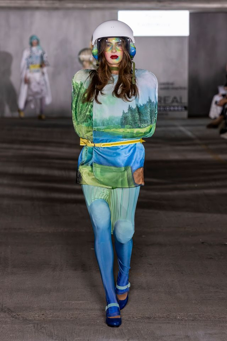
01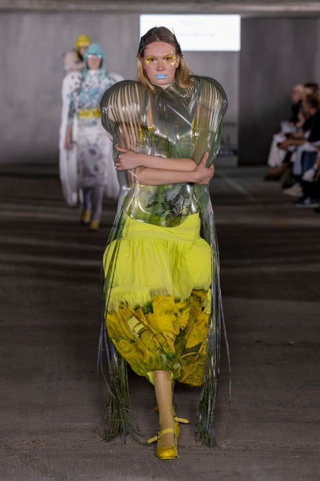
02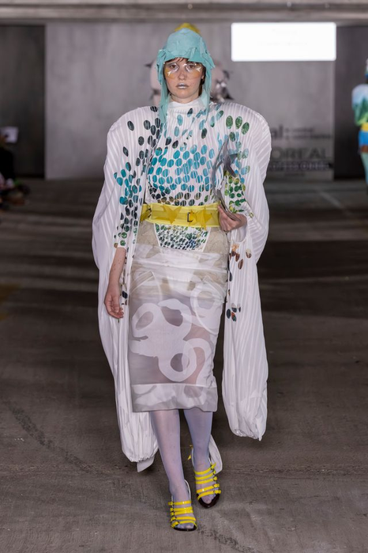
03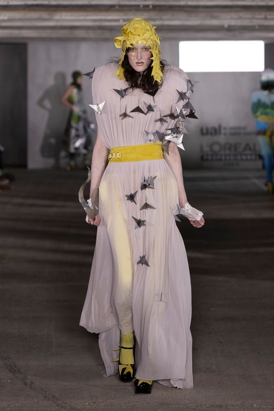
04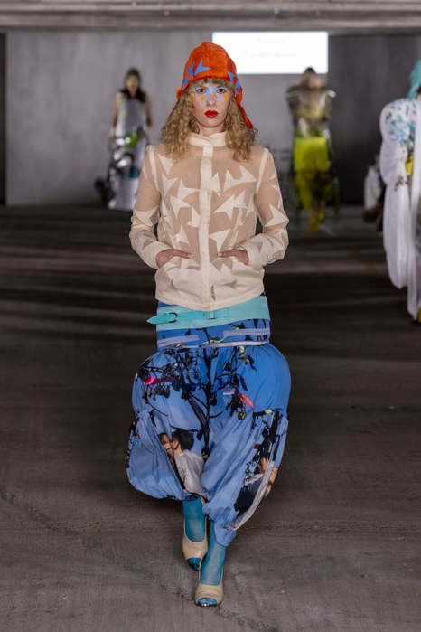
05提取共同的身体距离和体积来源。
区分主题证据与最终造型图。
边界极端实验用于发现可能性，不等于所有产品都要保持最高强度。
图源：课程 2026–2027 教学资料库（毕业系列）｜用途：仅用于“同一命题在五套中被重复验证”的观察；院校、年份与作者待开课前核实后补注
课后查阅｜教学补充
女装设计 III · 第04周
20 视觉转译 B
命题极端化案例：把命题推到极端，暴露规则边界
课后查阅：把命题推到极端时，哪些规则仍然可以识别。
命题极端化案例 · 五套5套并列观察
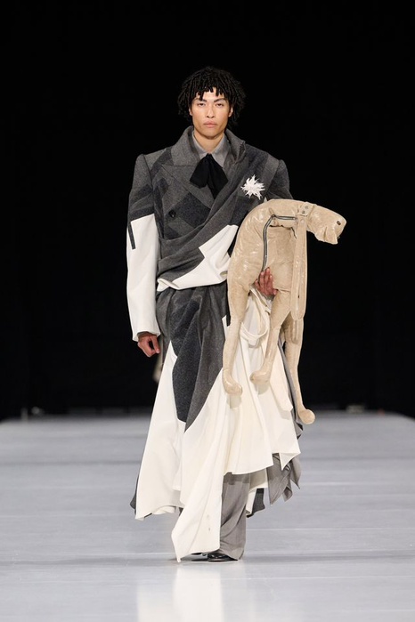
01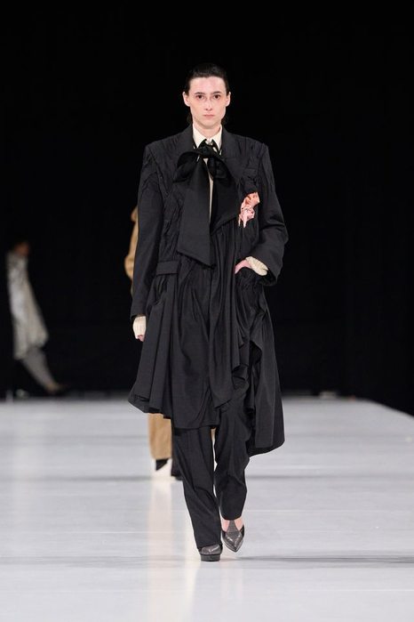
02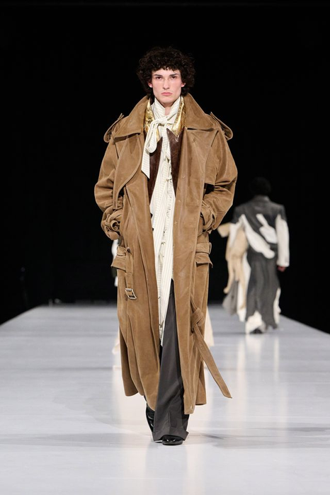
03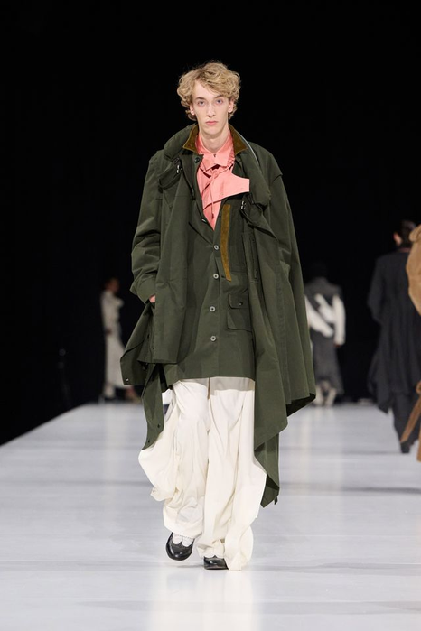
04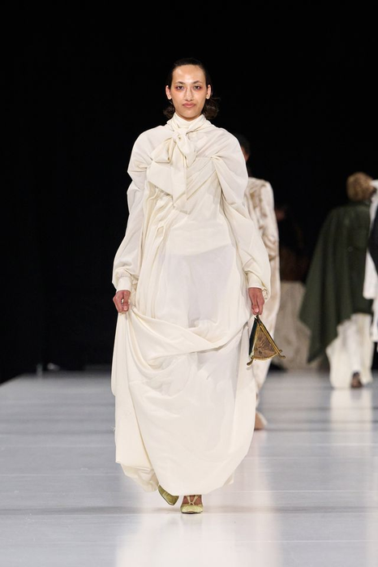
05观察哪些规则仍然可识别。
标出最难制作和最难穿着的位置。
图源：课程 2026–2027 教学资料库（命题极端化）｜用途：仅用于规则边界的观察；院校、年份与作者待开课前核实后补注
第2课时｜45分钟
女装设计 III · 第04周
21 视觉转译 C
Area 2026秋冬｜同一垂挂规则如何进入五种产品角色
以垂挂线性装饰为共同代码，比较裙装、针织与分体造型如何调整密度、重量、身体暴露与活动范围。
Area 2026秋冬 · Vogue Runway同一季5套：长度／密度／覆盖位置变化
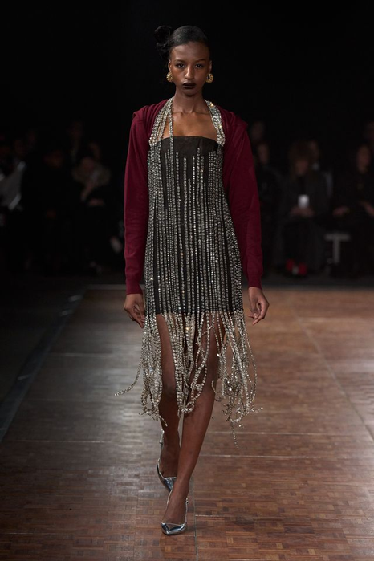
01 透明层次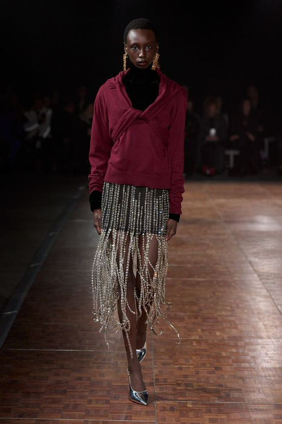
02 线性垂挂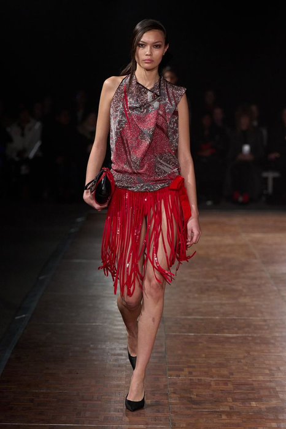
03 动态流苏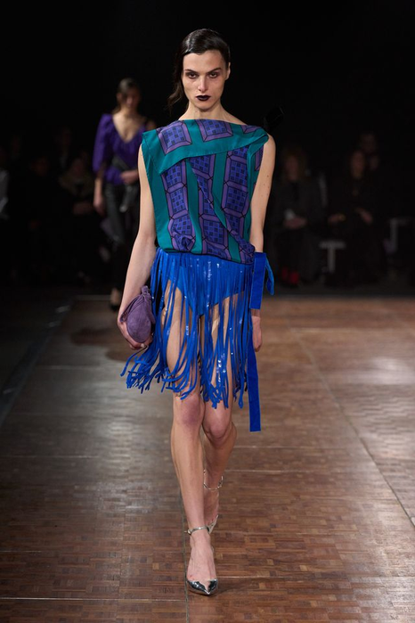
04 色彩扩张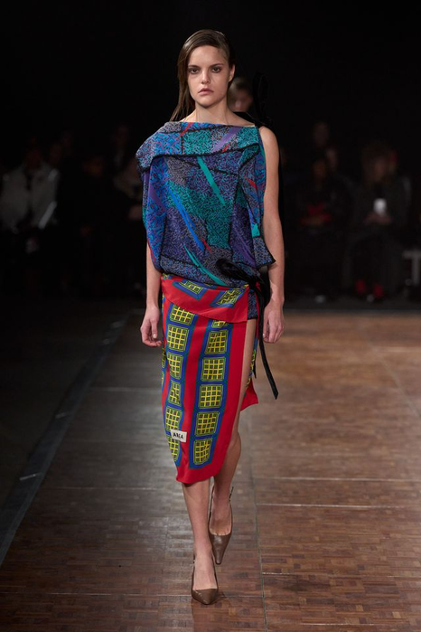
05 分体转译保持：垂挂线性装饰、局部透明与身体周围的动态边缘。
变化：密度、长度、覆盖位置与产品角色；同时检查重量、工时和活动限制。
图源：Area 2026秋冬成衣｜Vogue Runway｜用途：仅用于同一设计密码进入五种产品角色的比较
第2课时｜45分钟
女装设计 III · 第04周
22 开发边界
四条边界必须同时写出“允许、排除、验证”
继续使用城市女性高级女装案例；以下是写法示范，学生必须替换为自己的决定。
第2课时节奏案例9′边界＋Gate预告7′实操18′同伴讲评8′评价与收尾3′
边界
允许
排除
验证证据
01产品
连衣裙、上衣、半裙与可转换叠层，共同组成5套高级女装方向。
本阶段不扩展运动装、童装或完整配饰线。
每个品类都能回应“仪式感／行动自由”的核心矛盾。
02身体
使用既定基准人台，优先检查抬臂、跨步与坐姿。
没有试穿证据时，不宣称适配所有体型。
关键部位标注活动量，并完成一次白坯试穿。
03材料
薄纱、蕾丝、棉质与结构衬底；主材料控制在3类以内。
排除课程周期内无法取得、无法打样的特殊材料。
提交10—20cm样布3块，记录垂坠、透明、厚度与缝制。
04制作
使用现有设备与技能，先完成2D／3D局部实验和1∶2白坯。
排除超出时间、设备、技能或成本上限的工艺承诺。
列出工序、失败风险、所需时间与下一次检查节点。
第2课时｜45分钟
女装设计 III · 第04周
23 Gate 1预告
先知道终点：最后只需要证明五件事
本页不是立即评审，而是告诉你下一课堂实操的初稿必须准备哪些证据。
01
证据是什么？
人物、场景与时事资料是否可靠，并能追溯来源？
02
问题是什么？
需要由服装而不是口号解决的核心矛盾是什么？
03
规则是什么？
哪些轮廓、材料或结构关系将在5套中重复出现？
04
边界是什么？
本阶段允许、排除什么，理由和资源限制是什么？
05
如何验证？
下周用元素图、样布或白坯中的哪一种检查成立？
固定句式“我的证据证明＿＿；因此承诺通过＿＿规则解决＿＿；目前最大风险是＿＿；下一步用＿＿验证。”
第2课时｜45分钟
女装设计 III · 第04周
24 课堂实操
18分钟：把第1课时的主题板骨架转成任务书初稿
直接使用第1课时实操中已完成的5张证据骨架；现在只补逻辑，不重新装饰版面。
03分钟
压缩概念句
用“概念句”页的句式写出对象、情境、矛盾与策略，控制在45字以内。
完成信号：删去一个词会改变设计意思。
06分钟
填写八项任务书
完成人、场、题、品、形、材、责、验；不会的部分标“待验证”。
完成信号：八项都能用一句话朗读。
05分钟
绑定主题板证据
给8—12张资料编号，并在每条任务书后写出对应编号。
完成信号：形式决定能追溯到来源图。
04分钟
写风险与边界
确定允许、排除与验证方式，再写出下一周最先进行的实验。
完成信号：只保留1个最大风险。
课堂输出主题板骨架1页 + 设计任务书初稿1页 + 证据编号 + 1项验证任务。
第2课时｜45分钟
女装设计 III · 第04周
25 同伴讲评
8分钟四人小组｜每人1分钟说明 + 1分钟反馈
评论不讨论个人喜好，只帮助对方做出下一次可执行修改。
四人并行流程
01说明者用“Gate 1预告”页的固定句式讲60秒。
02其余三人同时记录四类问题，不打断。
03用60秒只说最关键的一条修改建议。
04说明者立即圈出两项要执行的修改。
每位学生带走保留1项 + 删除1项 + 补证1项 + 验证1项，并圈定最先执行的2项修改。
课后查阅｜教学补充
女装设计 III · 第04周
26 期末评价连接
本周成果将进入同一套六项终期评价
平时训练不是零散作业，而是期末系列的证据积累；本页依据《25级〈女装设计〉考核大纲》期末实践考试评分标准（满分100分）。
10分
时代性与创意
主题回应当下，并形成自己的问题与立场。
10分
趋势性与元素
提炼的设计元素与当季趋势、审美和来源一致。
20分
当代女性适配
款式回应身体、动作、场景与真实穿着需求。
20分
整体造型美感
比例、色彩、材料与细节共同形成完整造型。
20分
市场与定位
顾客、价格、品类和使用情境边界清楚。
20分
统一与丰富
风格统一，同时具有角色、搭配与造型变化。
第2课时｜45分钟
女装设计 III · 第04周
27 形成性评价
Gate 1：能否安全进入元素提取
成立才进入第05周；部分成立需先补证据。
✓
一致・5分人物、时事、主题和形式规则互相支持。
→ 期末｜时代性与创意 10分✓
具体・5分标准可通过图纸、材料或样衣检查。
→ 期末｜趋势性与元素 10分✓
有限・5分产品、材料和制作边界清楚。
→ 期末｜市场与定位 20分✓
可追溯图片、数据与访谈来源完整。
→ 课程通过性条件；无来源即 Gate 1 不通过本周不评当代女性适配、整体造型美感、统一与丰富——共 60 分自第05周起逐周累积。
第2课时｜45分钟
女装设计 III · 第04周
28 下周准备
第05周：从主题证据中提取元素
不要先画完整款式。
本周提交规格① 主题板＋设计任务书：A3 横版 2 张（PDF，300dpi），文件名 W04_学号_姓名.pdf——主题板 8—12 张已编号资料 ＋ 任务书八项 ＋ 每项对应的证据编号 ＋ 1 项验证任务；第05周第1课时前经课程群提交，纸质稿到堂。 ② 概念句写在主题板右上角，45 字以内。 ③ 课堂修正稿不交，但须与主题板一并带到第05周。
第2课时｜45分钟
女装设计 III · 第04周
一句话小结：任务书是一份可检查的承诺
“我的主题板证明 ______；因此任务书承诺通过 ______ 的形式规则，为 ______ 穿着者解决 ______。第05周我要先从这条规则里提取 ______ 作为可变形的元素。”
01主题板1页
02设计任务书1页
03三条设计标准
04Gate 1修改清单
05第05周待提取元素1项